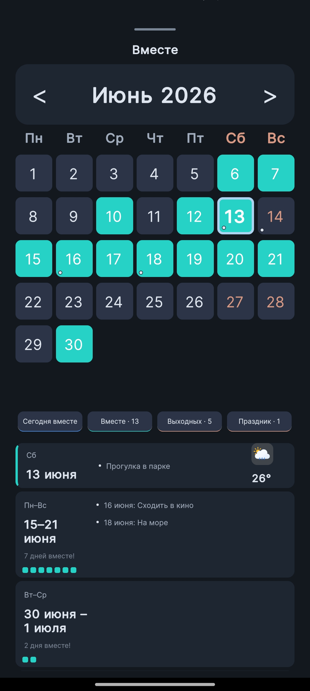
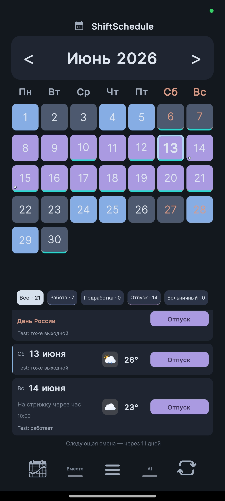
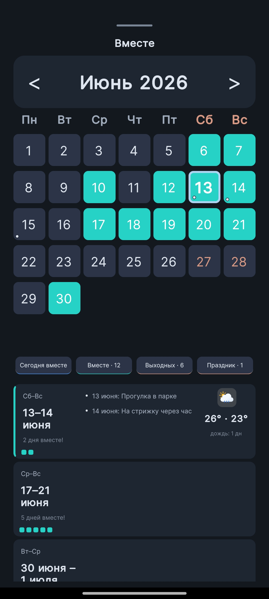

Со стороны сменный график иногда кажется удобным: работаешь не каждый день, бывают выходные среди недели, можно куда-то сходить, пока остальные на работе.
Но если в семье два разных графика, всё становится сложнее. У одного смена, у второго выходной. Потом наоборот. Один после ночной только отсыпается, второй уже планирует дела. И вроде бы выходные есть у обоих, но вместе они почему-то почти не совпадают.
Один свободный день ещё можно найти вручную. А вот найти два, три или семь дней подряд — уже отдельная задача.
Нужно сравнить два календаря, вспомнить про подработки, отпуск, больничный, ночные смены и праздники. А потом ещё понять, подходит ли этот период для поездки или лучше оставить его для домашних дел.
В ShiftSchedule 2.0 для этого появилась отдельная вкладка «Вместе».
Не просто общий выходной, а период
Раньше главная задача была простой: показать дни, когда у вас и партнёра совпадают выходные.
Но в реальной жизни одного дня часто мало. Для поездки, отдыха, семейных дел или нормальной перезагрузки хочется найти несколько свободных дней подряд.
Поэтому в новой версии вкладка «Вместе» показывает не только отдельные совпадения, но и объединяет их в периоды.
Например:
- 13–14 июня — 2 дня вместе;
- 17–21 июня — 5 дней вместе;
- 30 июня — 1 июля — ещё один общий период.
Так сразу видно, где просто свободный день, а где уже можно что-то планировать.

Почему это удобнее обычного календаря
Обычный календарь показывает даты. Но он не понимает, что у одного человека смена день/ночь, у второго другой цикл, а где-то ещё есть подработка или отпуск.
ShiftSchedule считает именно сменный график. Поэтому вкладка «Вместе» сравнивает два расписания и показывает только те даты, когда оба действительно свободны.
Это особенно полезно, если графики разные: 2/2, 3/3, сутки через трое, день/ночь или свой цикл.
Больничный и отпуск учитываются правильно: если один из партнёров на больничном, этот день не считается совместным выходным — приложение понимает разницу между свободным днём и отсутствием по болезни.
Погода и праздники
В новой версии появились праздники разных стран. Их можно включить в настройках, и они будут отображаться в календаре.
На главном экране можно увидеть праздничный день, заметки и погоду рядом со сменами.

Для совместных периодов во вкладке «Вместе» показывается погода. Если свободных дней несколько, приложение показывает сводку: температуру и количество дождливых дней.
Это помогает заранее понять, подходит ли период для прогулки, поездки или отдыха на природе.

Заметки и планы
Когда общий период найден, на него можно сразу записать планы: прогулка, кино, поездка, море, встреча или семейные дела.
В ShiftSchedule 2.0 заметки можно добавлять не только вручную, но и через Алису. Попросили добавить заметку на нужную дату — она появится в календаре.
Что ещё вошло в обновление 2.0
Кроме вкладки «Вместе», в версии 2.0 появились:
- официальные праздники разных стран;
- новый раздел «Отображение» для погоды и праздников;
- ручной выбор дневных и ночных смен;
- дневные и ночные подработки;
- безопасное изменение графика День/Ночь через черновик;
- улучшенная партнёрская синхронизация;
- более стабильная погода;
- исправления будильников, уведомлений и Android-календаря.
Самое важное — приложение стало удобнее не только для ведения своего графика, но и для планирования времени вместе.
Попробуйте ShiftSchedule бесплатно
Если вы работаете посменно и устали вручную искать общие выходные — скачайте приложение.
Скачать в RuStore ↓ Скачать APK